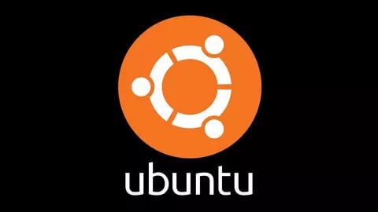
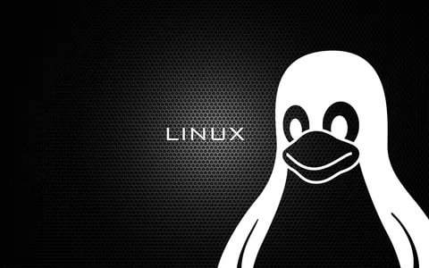
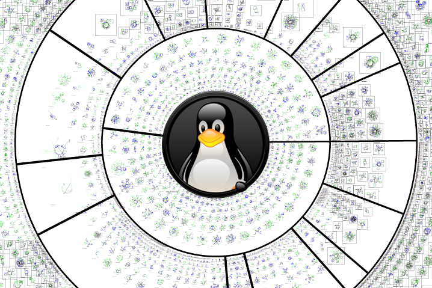

DAĞITIM,PAKET,DEPO VE ÇEKİRDEK NEDİR?
Dağıtım

Genel olarak bu terim,İşletim sisteminin ilk aşamalarda çalışmasını sağlamak için minimum bir dizi program. Dağıtımda çekirdek, ana programlar, çalışma ortamının kabuğu ve genel olarak uygulanabilir bir sistemin kurulması için gerekli olan her şeyi içerir.
Paket
İnternet ortamında taşınacak veriler baytlar la ifade edilen belirli boyutlarda parçalanır. İşte bu parçalar paketlerdir. Her paketler hedef, gönderici IP’si, ilgili alıcıların IP’leri, verinin kaç pakete bölündüğü ve bu paketin kaçıncı paket olduğu gibi bilgileri taşır. Paketler verileri belirli iletişim kuralları çerçevesinde taşırlar.
Örneğin; internet TCP/IP iletişim kuralını kullanır. Her paket verinin bir kısmını içerir ve tipik bir paket 1,000 veya 1,500 bayt veri içerir.
Depo Nedir ?

Linux kullanıcılarının ihtiyaçlarını karşılamak için binlerce uygulama linux paket deposu üzerinden sunulmaktadır. Uygulamaların bu şekilde bir arada tutulduğu yapılara depo ismi verilir. Linux kullanıcıları bu depolar üzerinden istedikleri uygulamaları direkt olarak sistemlerine otomatik kurabilir.
Çekirdek

Çekirdek (kernel), işletim sisteminin kalbidir. Uygulamalar ve donanım seviyesindeki bilgi işlemleri arasında bir köprü görevi görür. Çekirdeğin görevleri sistemin kaynaklarını yönetmeyi de kapsamaktadır. Genellikle çekirdek, işletim sisteminin temel bir elemanı olarak, yazılımın fonksiyonunu yerine getirebilmesi için kontrol etmesi gereken kaynaklar için düşük seviye soyutlama katmanı sağlayabilir.
Geri dön...